Panduan disusun per peran pengguna. Cari bab yang sesuai dengan pekerjaan Anda — Anda tidak perlu membaca bab lain.
Simbol yang dipakai:
| Simbol | Arti |
|---|---|
| Invoicing ▸ Vendors ▸ Bills | Jalur menu. Klik berurutan dari kiri ke kanan. |
| [Confirm] | Tombol yang harus diklik. |
| Purchase Type | Nama field pada form. |
PO/T/EBR/… | Nilai atau kode teknis. |
| PERAN | Peran yang berwenang melakukan langkah tersebut. |
Kotak berwarna kuning berisi hal yang sering salah. Kotak merah berisi hal yang akan menyebabkan kegagalan bila diabaikan. Bacalah sebelum menjalankan langkahnya.
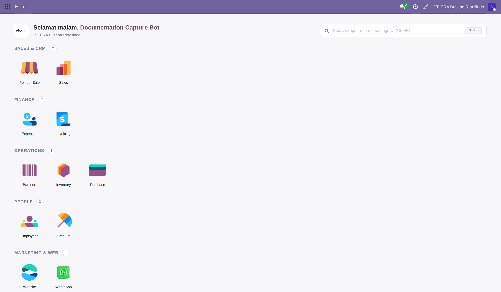
| Pekerjaan Anda | Bab | Isi |
|---|---|---|
| ITMenarik & mengimpor berkas dari EBR | Bab 2 | Retail Import |
| TOKOMemantau penjualan toko | Bab 3 | Point of Sale |
| BELIMembuat PO & retur ke vendor | Bab 4 | Purchase & PO Return |
| GUDANGMenerima barang, scrap, stok opname | Bab 5 | Inventory |
| FINANCEFaktur vendor, pembayaran, jurnal | Bab 6 | Invoicing / Accounting |
| FINANCEAktiva tetap & depresiasi | Bab 7 | Assets |
| FINANCEMenerbitkan laporan keuangan | Bab 8 | Reports |
| PAJAKPPN, PPh, Bukti Potong, Coretax | Bab 9 | Pajak Indonesia |
| ITParameter sistem & penjadwalan | Bab 10 | Settings ▸ Technical |
Penjualan Levi's tidak diketik di Odoo. Penjualan terjadi di sistem kasir EBR, lalu di-export sebagai berkas Excel/CSV ("berkas X"), dan Anda yang memasukkannya ke Odoo. Odoo kemudian membentuk POS Order dan jurnalnya secara otomatis.
Retail Import ▸ Import Data
levis_x24 untuk penjualan harian,
levis_x70d untuk data alat bayar, levis_x101 untuk master produk.Secara normal, berkas yang sudah pernah diimpor akan dilewati (lihat kotak di bawah). Mencentang Force re-import mematikan pengaman itu dan memaksa berkas diproses ulang. Gunakan hanya setelah impor sebelumnya gagal dan Anda sudah yakin penyebabnya diperbaiki.
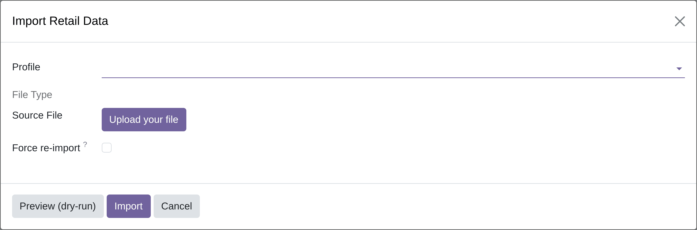
Setiap berkas di-hash (SHA256). Jika Anda tidak sengaja mengunggah berkas yang sama persis dua kali, sistem akan melewatinya — tidak akan terjadi pembukuan ganda.
Impor X101 (master produk) lebih dulu, baru X24DN. Jika ada SKU di X24DN yang belum ada di master, transaksi tersebut akan diparkir sebagai error — bukan diposting dengan produk asal-asalan. Ini disengaja, agar pendapatan tidak bocor ke akun yang salah.
Urutan harian yang benar: X24DN → X70D → X48.
Retail Import ▸ Imports
Daftar ini adalah catatan seluruh impor yang pernah dijalankan. Kolom yang perlu Anda perhatikan: State, Records Created, Records Matched, Records Skipped, dan Error Count.
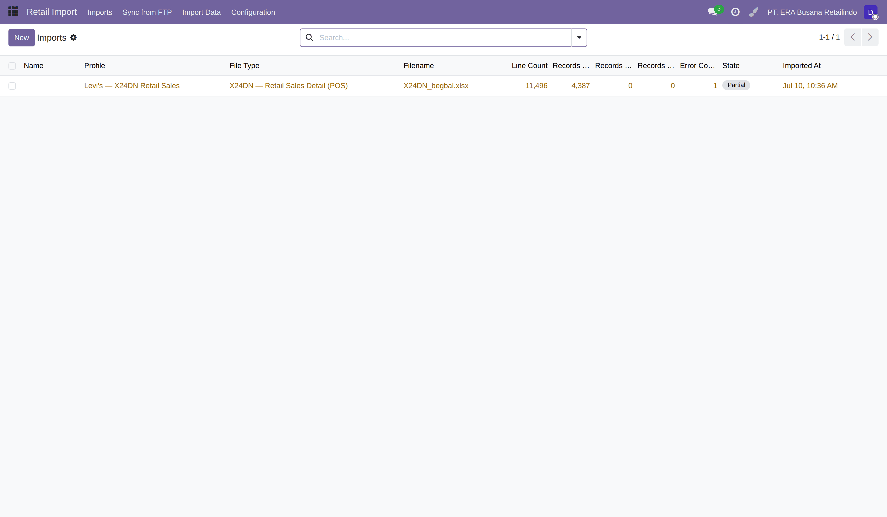
| State | Arti | Tindakan Anda |
|---|---|---|
| Queued | Menunggu giliran proses. | Tunggu. Tidak ada tindakan. |
| Running | Sedang diproses. | Tunggu. Berkas besar bisa lama. |
| Imported | Sukses penuh. | Selesai. Tidak ada tindakan. |
| Partial | Sebagian baris gagal. | Wajib ditindaklanjuti — lihat §2.3. |
| Failed | Gagal total. | Wajib ditindaklanjuti — lihat §2.3. |
#N/A atau kategori kosong → data sumber cacat; minta EBR mengirim ulang.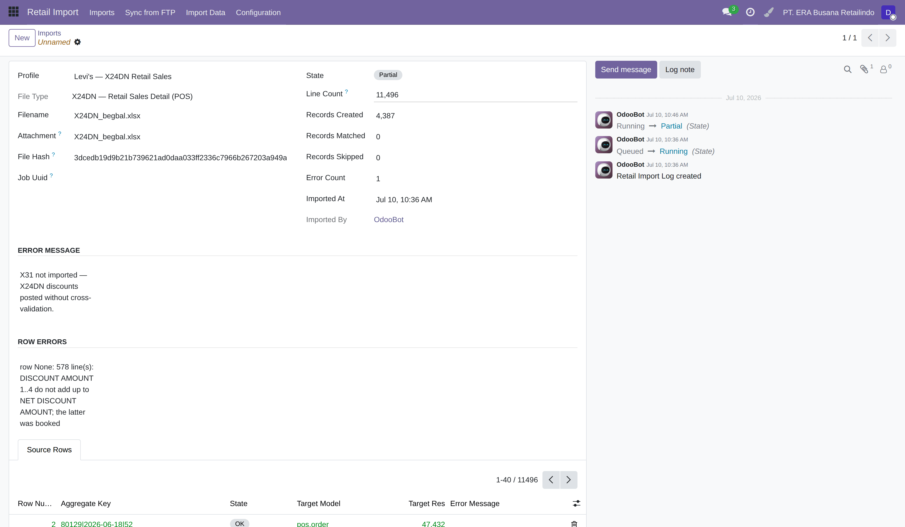
Retail Import ▸ Configuration ▸ Import Profiles
Mengubah Import Profile mengubah cara seluruh berkas dibaca. Salah sedikit, seluruh impor berikutnya akan salah. Ubah hanya bila format berkas dari EBR memang berubah, dan selalu uji dengan [Preview] sebelum dipakai produksi.
Field yang penting pada Profile:
| Field | Fungsi |
|---|---|
| Code | Kode unik profil, mis. levis_x24. |
| File Type | Menentukan logika pemuatan mana yang dipakai (X101 ≠ X24 ≠ X70D). |
| File Format | xlsx atau csv. |
| Sheet Name | Nama sheet Excel yang dibaca. |
| Data Start Row | Baris ke berapa data dimulai (dihitung mulai dari 1). Ini paling sering menjadi penyebab impor kacau — jika EBR menambah baris judul, angka ini harus disesuaikan. |
| Column Map | Pemetaan nama kolom berkas → field Odoo. |
| Fix Encoding | Memperbaiki karakter rusak (mis. ® yang terbaca salah). |
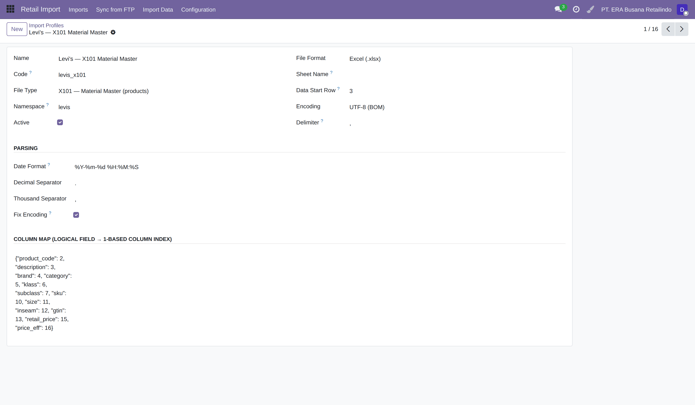
Retail Import ▸ Configuration ▸ Import Feeds · … ▸ Mailboxes
Selain upload manual, berkas dapat masuk otomatis. Import Feed memindai folder SFTP/lokal; Mailbox menarik lampiran dari INBOX email. Keduanya dijalankan oleh Scheduled Action.
1. Record Mailbox hanya boleh aktif di SATU database. Dua database yang memantau INBOX yang sama akan saling menghapus email.
2. Impor otomatis baru berjalan setelah Scheduled Action "Retail Import: poll feeds" diaktifkan (lihat §10.2). Selama nonaktif, berkas hanya menumpuk di folder tanpa diproses.
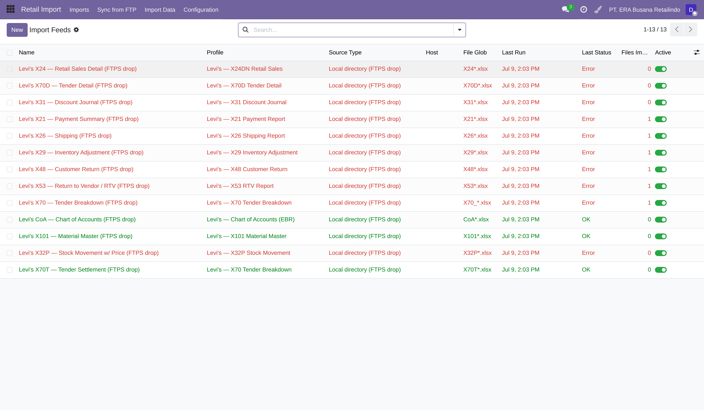
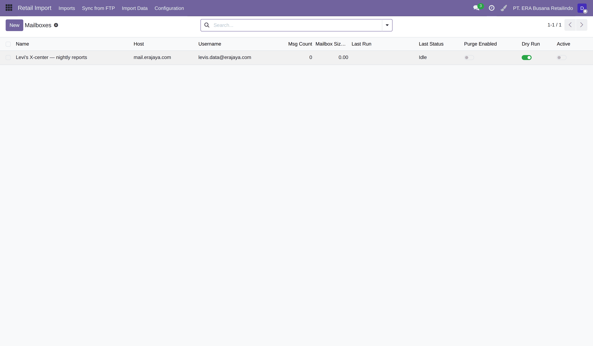
Di Odoo, POS Order dan Session toko Levi's dibentuk oleh proses impor, bukan diketik kasir. Tugas Anda adalah memverifikasi bahwa angka di Odoo sama dengan angka di sistem EBR.
Point of Sale ▸ Dashboard · Point of Sale ▸ Orders ▸ Sessions
Sistem membuat satu sesi per (toko × hari dagang). Sesi ditutup otomatis dan jurnalnya diberi tanggal hari dagang — bukan tanggal impor. Jadi laporan bulan Juni tetap berisi transaksi Juni, meskipun berkasnya baru diimpor bulan Juli.
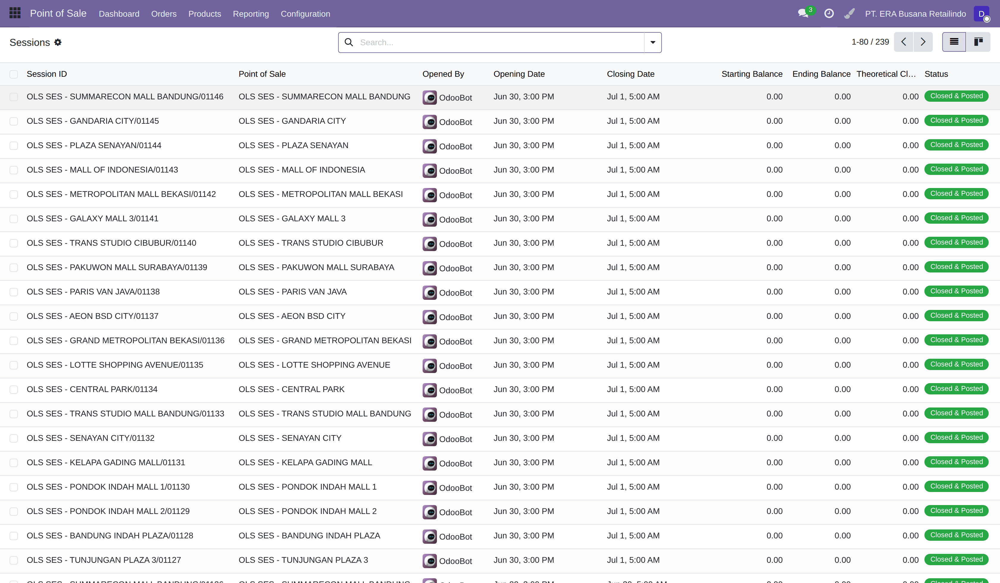
Point of Sale ▸ Orders ▸ Orders
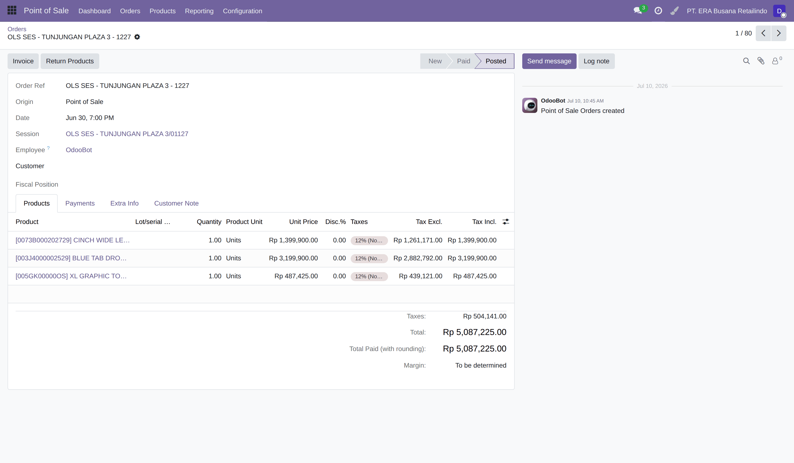
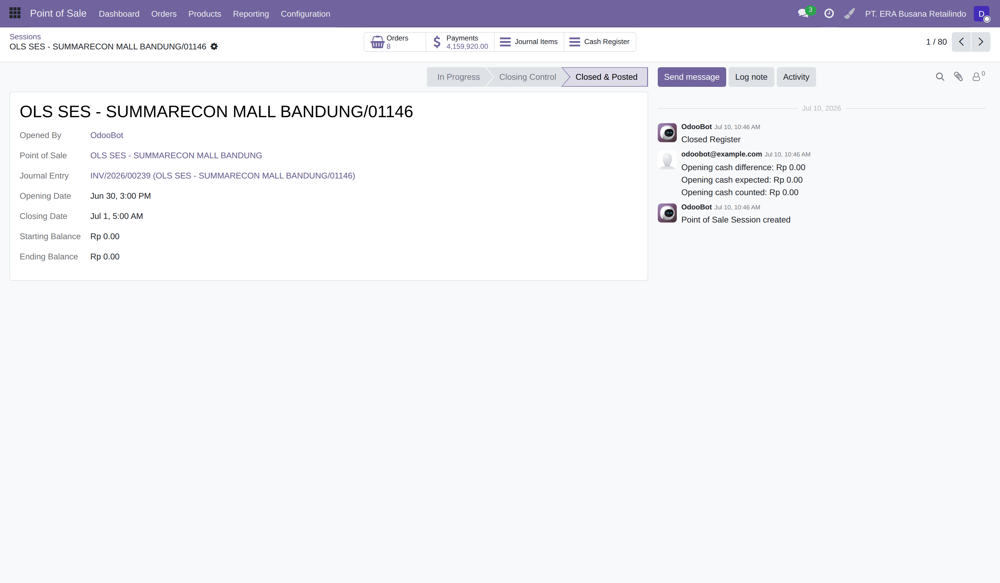
Setelah X24DN dan X70D untuk suatu hari terimpor, saldo akun POS Suspense Clearing untuk hari itu harus NOL. Saldo yang tersisa berarti data alat bayar (X70D) belum masuk. Laporkan ke Ops/Data Admin.
Purchase ▸ Orders ▸ Purchase Orders → klik [New]
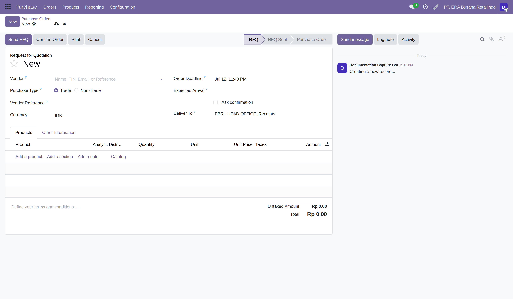
Pilihan Trade / Non-Trade menentukan tiga hal sekaligus: nomor dokumen, akun hutang, dan akun GR/IR.
| Purchase Type | Nomor PO | Akun Hutang |
|---|---|---|
| Trade | PO/T/EBR/2026/07/xxx | Hutang Dagang 2103100001 |
| Non-Trade | PO/NT/EBR/2026/07/xxx | Hutang Non-Dagang 2103300001 |
Salah pilih = hutang masuk ke akun yang salah dan nomor dokumen tidak sesuai kebijakan EBR.
Approvals Purchasing Manager
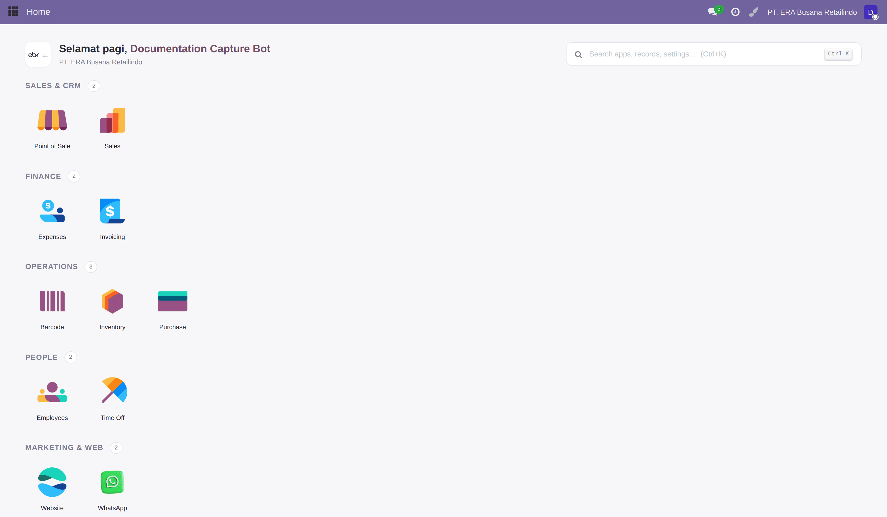
Purchase ▸ Orders ▸ PO Returns → klik [New]
Cukup masukkan produk dan kuantitas. Sistem akan menelusuri sendiri seluruh PO dan penerimaan dari vendor tersebut, mengambil dari PO tertua lebih dulu (FIFO), dan memakai harga satuan PO asalnya untuk setiap potongan.
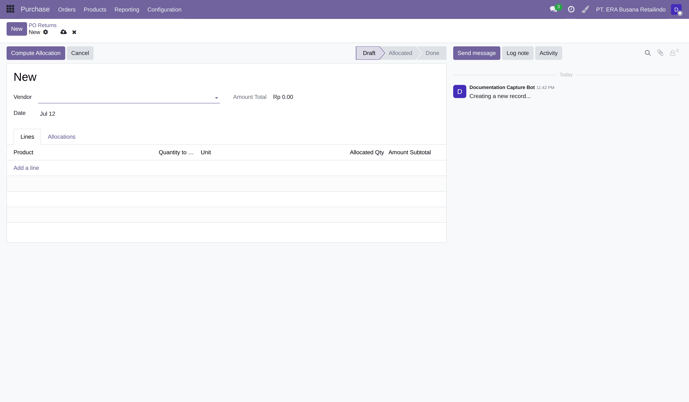
RTV/2026/xxx.Artinya kuantitas yang Anda retur melebihi yang tersedia. Batasnya adalah:
Qty diterima − Qty yang sudah pernah diretur − Qty alokasi yang masih pending
Periksa apakah ada PO Return lain untuk vendor & produk yang sama yang masih berstatus Allocated tetapi belum di-Validate.
Inventory ▸ Overview → kartu Receipts · atau Inventory ▸ Operations ▸ Transfers ▸ Receipts
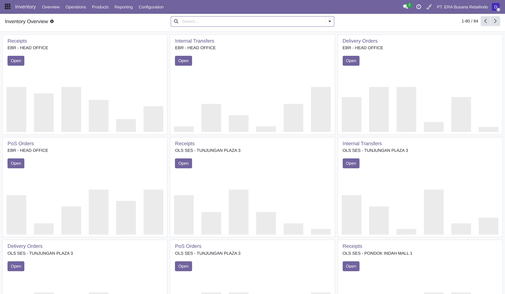
Jika kuantitas yang Anda isi lebih besar daripada yang dipesan di PO, [Validate] akan gagal dengan pesan error. Ini disengaja — untuk mencegah barang masuk tanpa dasar PO.
Yang harus dilakukan: terima sebanyak yang tertera di PO. Jika vendor benar-benar mengirim lebih, hubungi Purchasing untuk menerbitkan PO tambahan — jangan memaksakan angka di Receipt.
Sistem juga menolak baris yang tidak berasal dari PO. Anda tidak bisa menambahkan produk baru ke Receipt yang terkait PO.
Stok bertambah, dan sistem otomatis membentuk jurnal: Dr Persediaan / Cr GR/IR Clearing. Akun GR/IR menampung nilai barang yang sudah diterima tetapi fakturnya belum masuk. Anda tidak perlu melakukan apa pun untuk jurnal ini.
Inventory ▸ Operations ▸ Scrap Batches → klik [New]
Menu Scrap standar Odoo hanya bisa satu produk per dokumen. Scrap Batch memungkinkan banyak produk dalam satu dokumen, dan hanya membentuk satu jurnal — jauh lebih mudah ditelusuri.
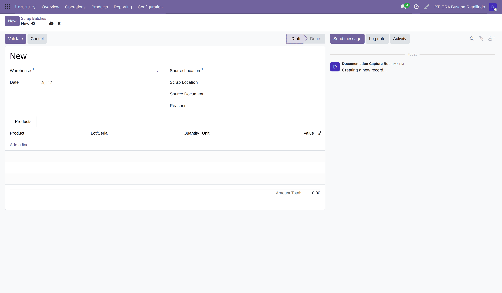
SCRAP/2026/xxx. Satu dokumen menampung banyak produk.Akun kerugian scrap sudah dikonfigurasi: 7218000001 — Inventory write-off.
Saat Anda klik [Validate], jurnal terbentuk otomatis:
Dr 7218000001 Inventory write-off / Cr akun persediaan kategori barang tersebut.
| Yang ingin Anda lihat | Menu |
|---|---|
| Stok on-hand per produk | Inventory ▸ Reporting ▸ Stock |
| Riwayat pergerakan barang | Inventory ▸ Reporting ▸ Moves History |
| Nomor Lot / Serial | Inventory ▸ Products ▸ Lots / Serial Numbers |
| Master produk (termasuk HS Code) | Inventory ▸ Products ▸ Products |
| Stok opname / penyesuaian | Inventory ▸ Operations ▸ Adjustments ▸ Physical Inventory |
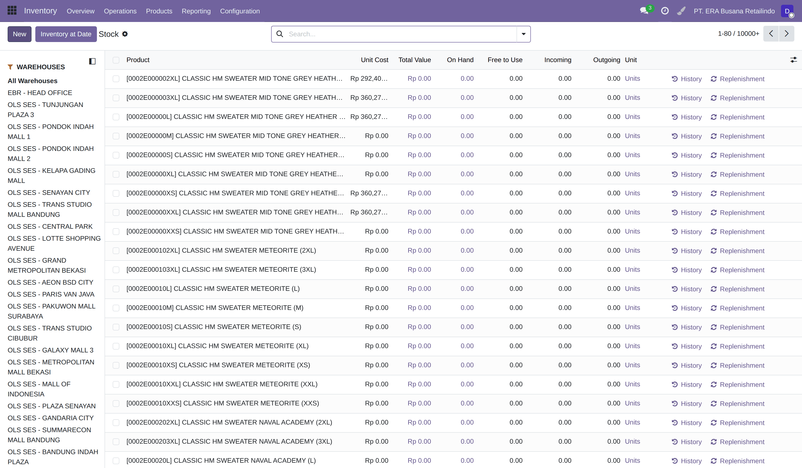
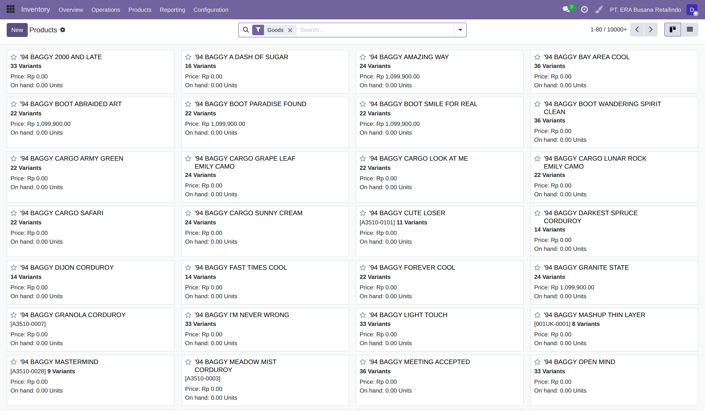
Invoicing ▸ Vendors ▸ Bills → klik [New]
BILL/T/EBR/… atau BILL/NT/EBR/….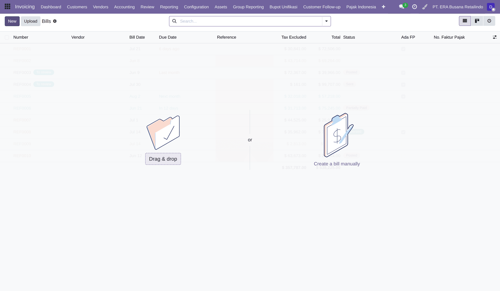
Berarti Bill Reference yang Anda isi sudah pernah dipakai untuk vendor tersebut. Di Odoo standar ini hanya peringatan; di sistem EBR ini adalah error yang memblokir — sengaja, untuk mencegah faktur ganda. Periksa apakah faktur tersebut sudah pernah diinput.
Jika vendor/produknya merupakan objek PPh, sistem otomatis membentuk Withholding Line dan draft Bukti Potong saat Bill di-post. Tarifnya ditentukan sendiri oleh sistem (mis. PPh 23 naik dari 2% ke 4% bila vendor tidak ber-NPWP). Serahkan tindak lanjutnya ke Tax Officer — lihat Bab 9.
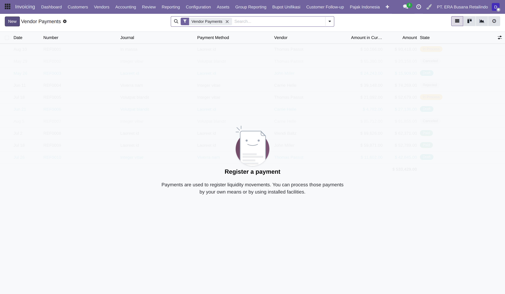
<4 digit terakhir rekening>/2026/07/xxx.Tabel Card BIN / MDR saat ini masih kosong. Selama kosong, perhitungan MDR tidak akan berjalan. Lihat §6.5 untuk cara mengisinya.
Invoicing ▸ Accounting ▸ Inventory Reconciliation Finance Manager
Menyelaraskan saldo GL akun persediaan dengan nilai stok riil.
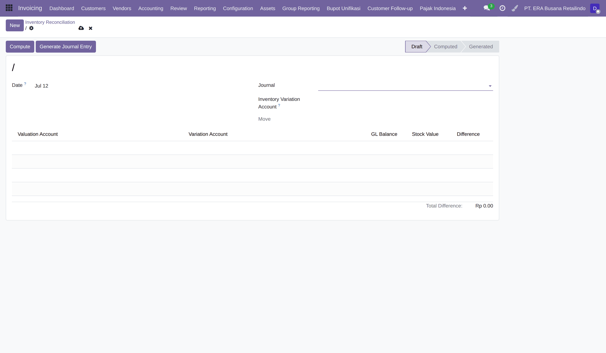
INVREC/2026/xxx.Invoicing ▸ Accounting ▸ Periodic COGS Finance Manager
Data penjualan toko diimpor lebih dulu daripada data pembeliannya. Akibatnya banyak barang terjual saat harga pokoknya belum ada di Odoo — barang itu dinilai berbiaya nol. Odoo 19 tidak lagi memperbaiki nilai ini secara retroaktif. Karena itu COGS dihitung berkala lewat dokumen ini.
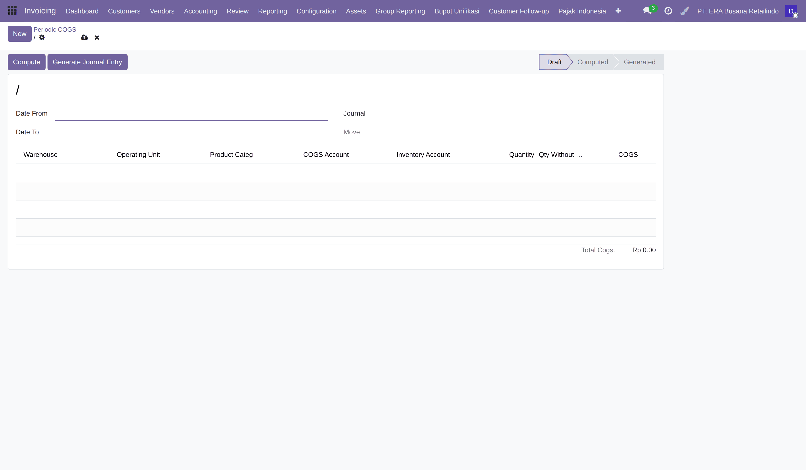
COGS/2026/xxx.Finance Manager Dua tabel konfigurasi yang menentukan ke akun mana angka jatuh.
Invoicing ▸ Configuration ▸ Trade / Non-Trade Accounts
Satu baris per Purchase Type. Isi: Payable Account, GR/IR Account, Expense Account.
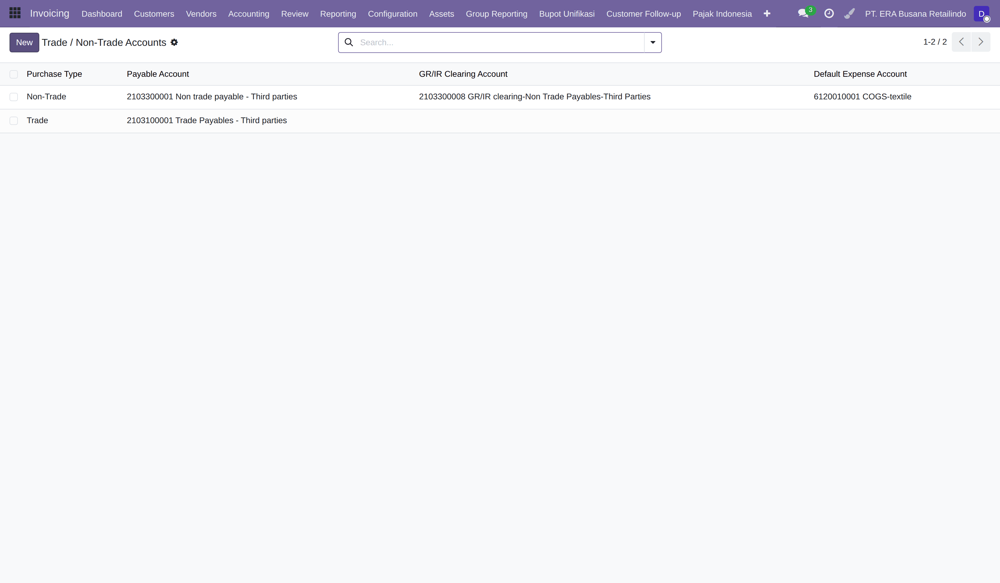
Jangan memilih akun bertipe Payable untuk GR/IR. Tipe Payable memicu aturan due date Odoo dan akan merusak posting Vendor Bill. Gunakan tipe Current Liability (Liabilitas Lancar).
Baris Trade pada tabel ini sengaja dibiarkan kosong pada kolom GR/IR Account.
GR/IR untuk barang dagangan ditentukan per kategori produk —
2103109121 textile, …122 footwear, …123 accessories,
…124 miscellaneous — dan semuanya sudah benar.
Jika Anda mengisi kolom GR/IR pada baris Trade, isian itu akan MENIMPA pemetaan per-kategori dan seluruh barang dagangan akan masuk ke satu akun GR/IR yang sama. Biarkan kosong.
Invoicing ▸ Configuration ▸ Card BIN / MDR → klik [New]
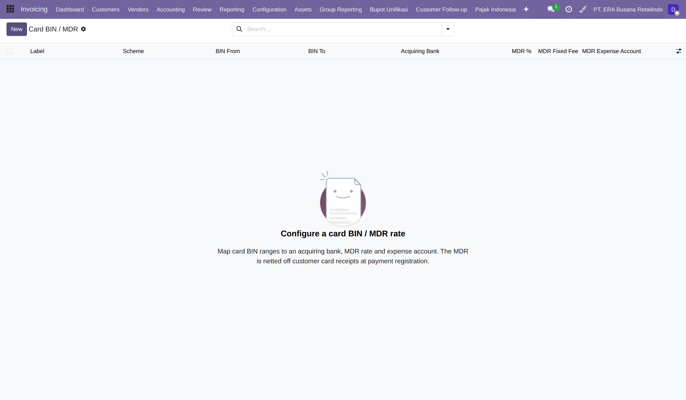
Sistem tidak memeriksa apakah rentang BIN saling tumpang tindih. Periksalah secara manual — rentang yang tumpang tindih akan membuat perhitungan MDR tidak dapat diprediksi.
Invoicing ▸ Assets ▸ Fixed Assets → klik [New]
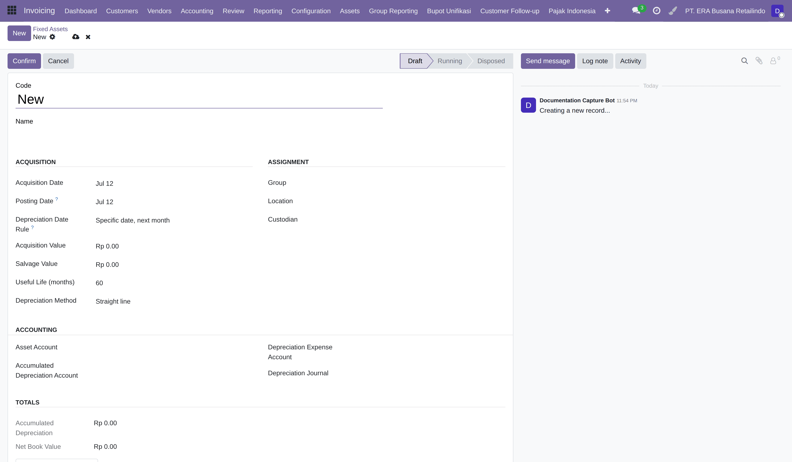
FA/2026/xxx.Seluruh grup ber-depresiasi kini punya akun akumulasi depresiasi dan jurnal depresiasi
(DEPRE). Contoh untuk Vehicles: aset 1205103000,
akumulasi 1205202000, beban 7204102000.
Land sengaja tidak punya akun depresiasi — tanah tidak disusutkan.
Invoicing ▸ Assets ▸ Post Depreciation
Scheduled Action "Custom Asset: Post Monthly Depreciation" sengaja masih nonaktif. Artinya Anda harus memposting depresiasi secara manual dari menu ini setiap bulan.
Alasannya: sekali cron itu diaktifkan, ia langsung memposting seluruh baris depresiasi yang sudah jatuh tempo — bisa banyak sekaligus dan sulit ditarik kembali. Aktifkan hanya setelah Finance melihat dampaknya lewat posting manual.
Jurnal yang terbentuk: Dr Beban Depresiasi / Cr Akumulasi Depresiasi.
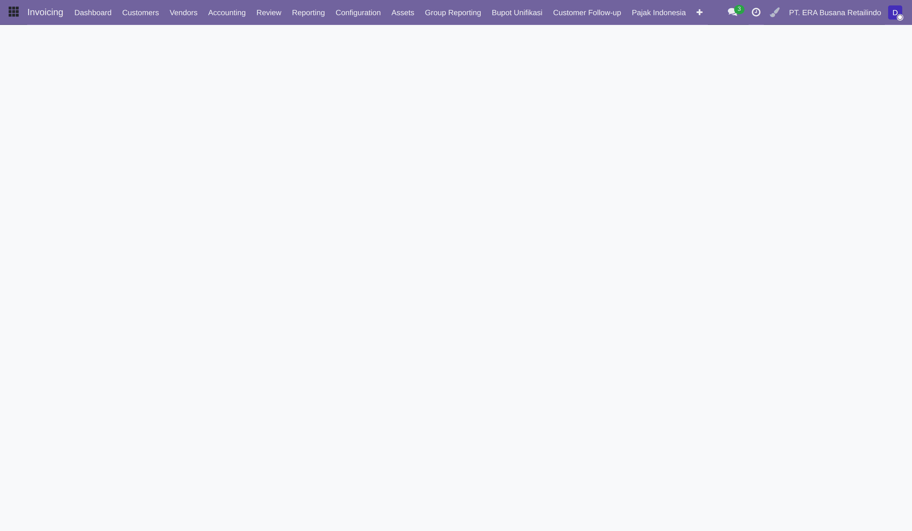
Invoicing ▸ Assets ▸ Revaluations
3005200004).7706000000).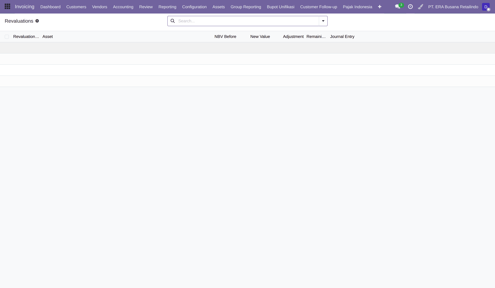
Invoicing ▸ Assets ▸ Asset Register
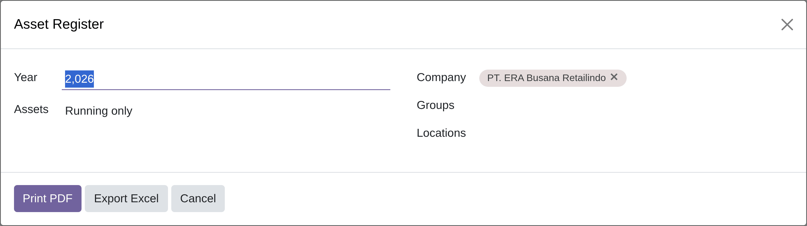
Invoicing ▸ Reporting ▸ Reports
Anda hanya perlu memahami satu pola — berlaku untuk seluruh 30+ laporan.
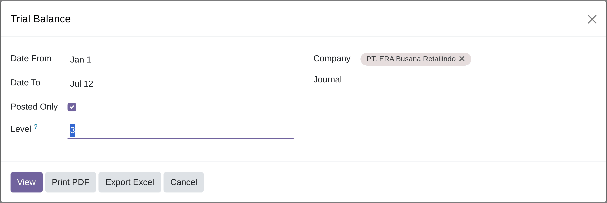
| Laporan | Kegunaan |
|---|---|
| Trial Balance | Neraca saldo seluruh akun. Titik awal setiap penutupan. |
| General Ledger | Rincian transaksi per akun. |
| Balance Sheet | Neraca. |
| Profit & Loss | Laba rugi. |
| Cash Flow | Arus kas. |
| GL Analysis | Pivot — dapat dipotong per Operating Unit. Inilah cara melihat kinerja per toko. |
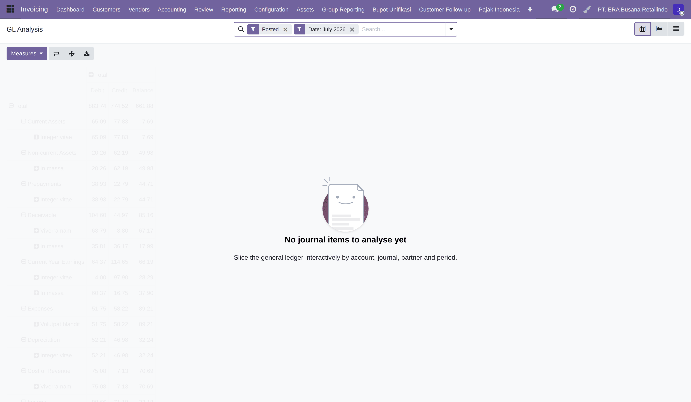
| Laporan | Kegunaan |
|---|---|
| Aged Payable | Umur hutang ke vendor. |
| Aged Receivable | Umur piutang. |
| Kartu Utang | Rincian mutasi hutang per vendor. |
| Kartu Piutang | Rincian mutasi piutang per pelanggan. |
| Partner Ledger | Buku besar per partner. |
| Uang Muka / DP | Monitoring uang muka. |
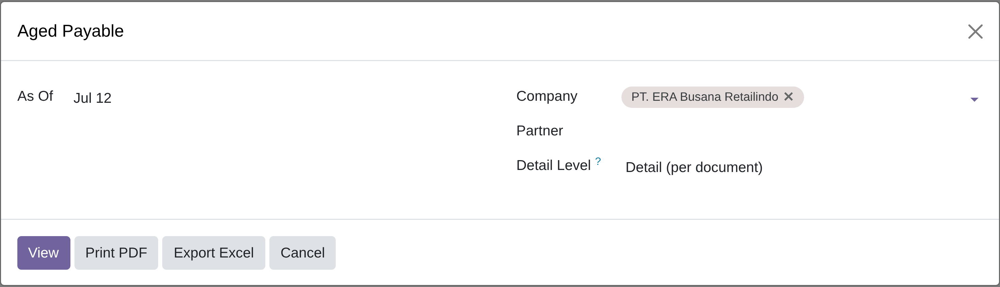
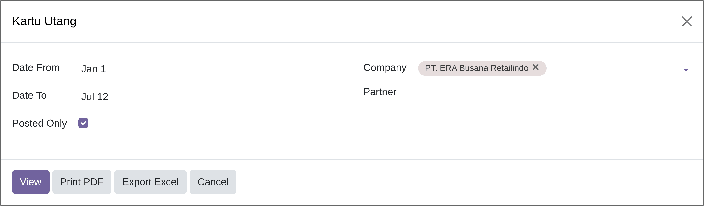
Invoicing ▸ Pajak Indonesia
Saat AP Officer mem-post Vendor Bill, sistem sudah memeriksa vendor dan produknya terhadap 107 kode objek pajak EBR, lalu membentuk potongan PPh berikut draft Bukti Potong. Anda tidak perlu menghitung manual — Anda perlu memeriksa dan melengkapi.
| Kondisi Vendor | PPh | Tarif |
|---|---|---|
| Dalam negeri, ber-NPWP | PPh 23 | Tarif normal (mis. 2%) |
| Dalam negeri, tanpa NPWP | PPh 23 | Otomatis naik 2× → 4% |
| Luar negeri | PPh 26 | 20% atau tarif tax treaty/DGT |
| Objek final | PPh 4(2) | Sesuai kode objek |
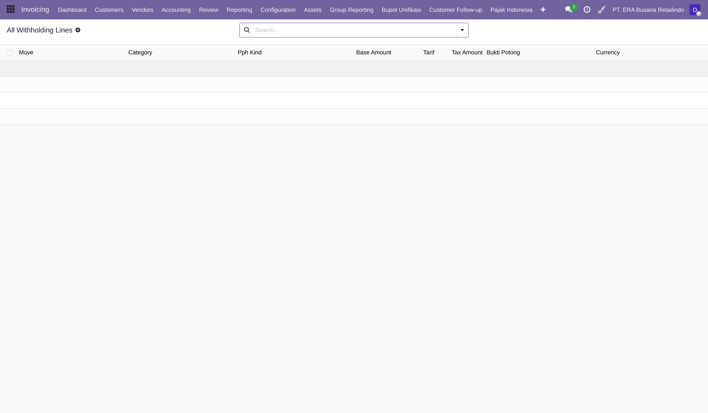
Dari 107 kode yang dimuat: PPh 23 (70 kode), PPh 26 (26), PPh 4(2) (10), PPh 21 (1). PPh 22 dan PPh 15 belum ada. Bila EBR memiliki transaksi jenis ini, ajukan penambahan kode.
Invoicing ▸ Bupot Unifikasi · Custom ▸ Coretax ▸ Bukti Potong
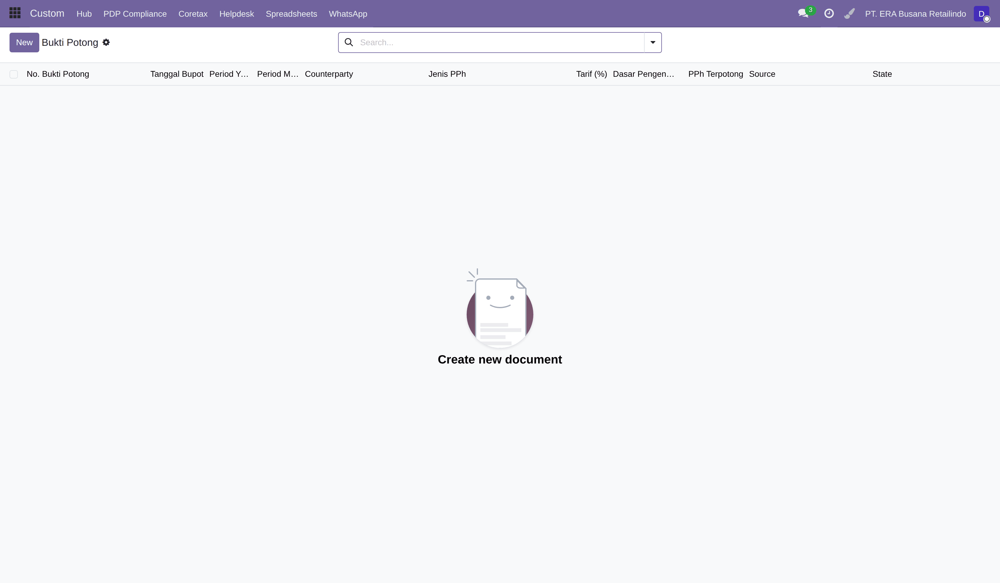
Invoicing ▸ Pajak Indonesia ▸ Pre-Export Validation
Memeriksa massal kelengkapan data sebelum dikirim ke DJP: NPWP/NIK, DPP, dan Sertel. Menjalankan ini lebih dulu jauh lebih murah daripada ditolak DJP.
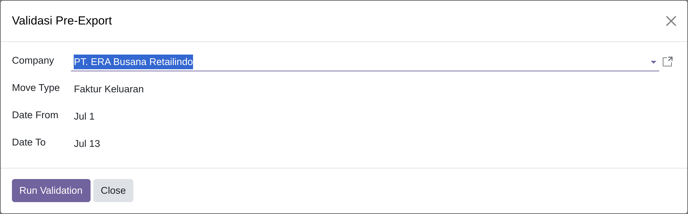
Invoicing ▸ Pajak Indonesia ▸ Issue Faktur Pengganti
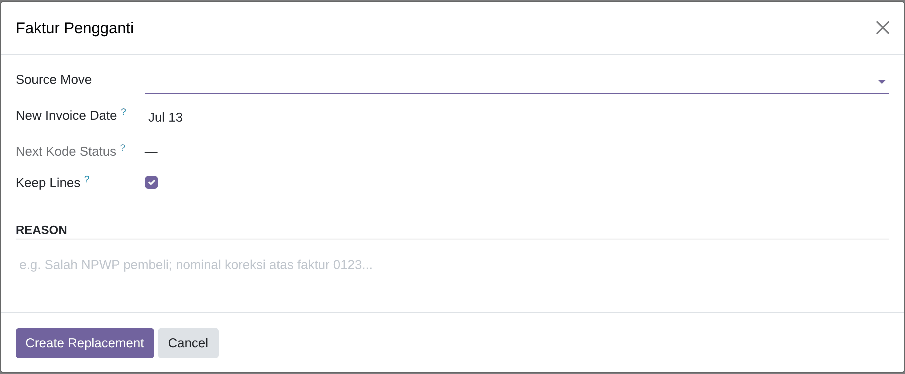
Invoicing ▸ Reporting ▸ Reports ▸ Laporan Pajak
17 laporan tersedia. Yang paling sering dipakai:
| Laporan | Kegunaan |
|---|---|
| Rekap Faktur Pajak | Rekapitulasi faktur pajak keluaran/masukan. |
| Rekap Bukti Potong PPh | Rekapitulasi seluruh Bupot yang diterbitkan. |
| SPT Masa PPN 1111 | Bahan pelaporan SPT Masa PPN. |
| Ekualisasi Omzet (PPN vs GL) | Kontrol kunci — membandingkan omzet menurut SPT PPN dengan omzet menurut buku besar. Selisih wajib dijelaskan. |
| Ekualisasi Biaya vs Objek PPh | Kontrol kunci — memastikan setiap biaya yang merupakan objek PPh sudah dipotong. |
| Monitoring NSFP | Memantau pemakaian nomor seri faktur pajak. |
| Data Quality NPWP/NIK | Menemukan partner dengan identitas pajak tidak lengkap. |
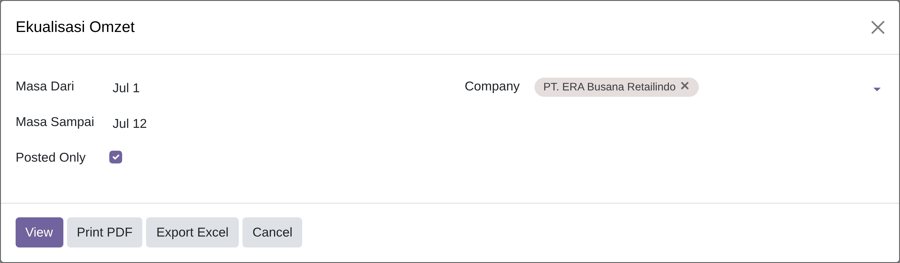
Parameter di bab ini mengubah cara jurnal terbentuk. Setiap perubahan wajib mendapat persetujuan Finance Manager dan didokumentasikan. Jangan mengubahnya untuk "mencoba-coba" di database produksi.
Settings ▸ Technical ▸ System Parameters
Ketik retail_import atau levis di kolom pencarian untuk menyaring.
| Parameter | Nilai | Arti |
|---|---|---|
retail_import.x24_post_enabled | 1 | X24DN diposting menjadi POS Order + jurnal. |
retail_import.x24_close_sessions | 1 | Sesi POS ditutup per toko per hari dagang. |
retail_import.x24_decouple_payment | 1 | Penjualan diparkir di POS Suspense Clearing; diselesaikan X70D. |
retail_import.x24_discount_reclass | 1 | Diskon direklas dari data X24DN. |
retail_import.x31_post_enabled | 0 | Nonaktif — harus tetap 0 (lihat peringatan). |
retail_import.x48_post_enabled | 0 | Retur penjualan belum diposting. |
retail_import.x24_strict_product | 1 | SKU tak dikenal diparkir sebagai error. |
custom_levis_localization.suppress_gr_journal | 0 | Mode Perpetual — jurnal Goods Receipt terbentuk. |
custom_levis_localization.scrap_loss_account_code | 7218000001 | ✅ Terisi — Inventory write-off. |
Keduanya mereklasifikasi diskon yang sama. Bila keduanya bernilai 1,
Gross Sales akan digelembungkan dua kali dan laporan laba rugi menjadi salah.
Konfigurasi yang benar saat ini: x24_discount_reclass = 1, x31_post_enabled = 0.
Settings ▸ Technical ▸ Scheduled Actions
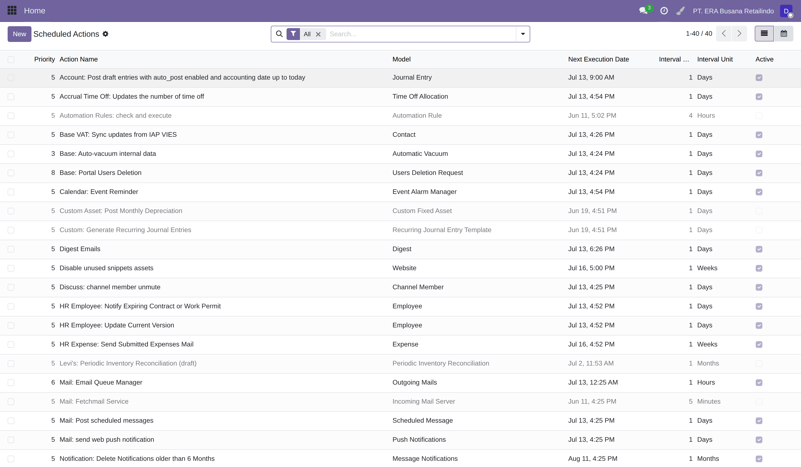
| Nama | Interval | Status | Fungsi |
|---|---|---|---|
| Custom Asset: Post Monthly Depreciation | Harian | Nonaktif | ⚠ Depresiasi harus diposting manual. Aktifkan hanya bila Finance siap — cron langsung memposting seluruh baris jatuh tempo. |
| Retail Import: fetch mailboxes | Per jam | Aktif | Menarik lampiran IMAP (tidak berefek selama record Mailbox nonaktif). |
| Retail Import: poll feeds | Per jam | Nonaktif | ⚠ Saklar go-live. Selama nonaktif, berkas di folder drop hanya menumpuk tanpa diproses. |
| Levi's: Periodic Inventory Reconciliation (draft) | Bulanan | Nonaktif | Menyiapkan dokumen INVREC draft. Tidak pernah memposting. |
Settings ▸ Users & Companies ▸ Users
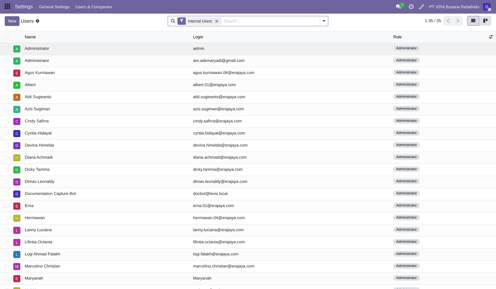
| Peran | Grup yang diberikan |
|---|---|
| Store Supervisor | Point of Sale / Manager |
| Warehouse Staff | Inventory / User |
| Warehouse Manager | Inventory / Manager |
| Purchasing Officer | Purchase / User |
| Purchasing Manager | Purchase / Manager |
| AP Officer / Accountant | Invoicing / Billing |
| Finance Manager | Invoicing / Administrator + Custom Reports / Administrator |
| Tax Officer | Invoicing / Billing + akses Coretax |
| Asset Officer | Asset User (atau Asset Manager untuk ubah konfigurasi) |
| Ops / Data Admin | Retail Import / Manager |
| System Administrator | Settings / Technical Features |
Kerjakan berurutan. Langkah berikutnya mengandalkan hasil langkah sebelumnya.
| ✓ | Peran | Langkah |
|---|---|---|
| ☐ | Ops Admin | Semua berkas periode ini sudah terimpor (X24DN, X70D, X31, X48). Tidak ada log berstatus Partial atau Failed. |
| ☐ | Store Sup. | Saldo POS Suspense Clearing = 0. Bila tidak nol, ada X70D yang belum masuk. |
| ☐ | Warehouse | Semua Receipt & Delivery sudah di-Validate. Scrap Batch & Cycle Count periode ini selesai. |
| ☐ | AP Officer | Semua Vendor Bill sudah di-post. Credit Note dari PO Return sudah di-post dan direkonsiliasi. |
| ☐ | Accountant | Saldo GR/IR Clearing sudah ditelusuri dan dapat dijelaskan (= barang diterima yang fakturnya belum masuk). |
| ☐ | Fin. Manager | Jalankan Periodic COGS. Periksa Zero Cost Qty; selidiki bila besar. Lalu [Post]. |
| ☐ | Fin. Manager | Jalankan Inventory Reconciliation. [Compute] → telusuri selisih → [Generate Entry]. |
| ☐ | Asset Officer | Depresiasi bulan ini sudah terposting (cek Post Depreciation). |
| ☐ | Tax Officer | Bukti Potong lengkap. Jalankan Ekualisasi Omzet dan Ekualisasi Biaya vs Objek PPh; selisih dijelaskan. |
| ☐ | Fin. Manager | Terbitkan Trial Balance, Balance Sheet, Profit & Loss, Cash Flow, dan GL Analysis per Operating Unit. |
| ☐ | Fin. Manager | Setelah semua sesuai, tetapkan Lock Date untuk mengunci periode. |
| Gejala | Penyebab | Solusi |
|---|---|---|
| [Validate] Receipt gagal — pesan tentang kuantitas berlebih | Kuantitas diterima melebihi kuantitas PO. Diblokir sistem secara sengaja. | Terima sesuai PO. Bila vendor memang mengirim lebih, minta Purchasing menerbitkan PO tambahan. |
| [Validate] Scrap Batch gagal — pesan tentang account | Parameter scrap_loss_account_code kosong. Sudah diperbaiki (7218000001) — seharusnya tidak muncul lagi. |
Jika tetap muncul, periksa parameter itu di Settings ▸ Technical ▸ System Parameters (§10.1). |
| Posting Vendor Bill gagal — pesan tentang due date | Akun GR/IR salah tipe — dipilih Payable, seharusnya Current Liability. | Ubah tipe akun GR/IR menjadi Current Liability (§6.5). |
| Vendor Bill ditolak — duplicate reference | Nomor faktur vendor sudah pernah dipakai. | Periksa apakah faktur sudah pernah diinput. Ini blokir yang disengaja untuk mencegah faktur ganda. |
| Confirm aset gagal — "depreciation journal must be set" atau akun akumulasi kosong | Grup aset belum punya jurnal depresiasi / akun akumulasi. Sudah diperbaiki untuk keenam grup (jurnal DEPRE). |
Jika muncul pada grup baru yang Anda buat sendiri, isi Journal dan akun-akunnya di Invoicing ▸ Assets ▸ Configuration ▸ Groups (§7.1). |
| PO Return ditolak — over-return | Kuantitas retur melebihi batas (diterima − sudah diretur − alokasi pending). | Periksa PO Return lain yang masih berstatus Allocated tapi belum Validate (§4.3). |
| Impor berstatus Partial — banyak baris error | SKU tidak ada di master X101, atau format kolom berkas berubah. | Impor ulang X101 terbaru; atau perbaiki Data Start Row / Column Map pada Import Profile (§2.3–2.4). |
| Pendapatan masuk ke akun "Others" | Produk hasil impor tidak punya kategori, sehingga tidak terpetakan ke akun pendapatan yang benar. | Pastikan X101 terbaru sudah diimpor dan x24_strict_product = 1 agar SKU tak dikenal diparkir, bukan dibuat asal. |
| Berkas sudah ditaruh di folder tapi tidak terproses | Scheduled Action "Retail Import: poll feeds" masih nonaktif. | Aktifkan di Settings ▸ Technical ▸ Scheduled Actions (§10.2). |
| Saldo POS Suspense Clearing tidak nol | X24DN sudah diimpor, X70D belum. | Impor X70D untuk hari dagang yang bersangkutan (§2.1). |
| Layar | Judul | Menu |
|---|---|---|
| 1 | Home — daftar aplikasi | Home |
| 2 | Wizard Import Data | Retail Import ▸ Import Data |
| 3 | Daftar log impor | Retail Import ▸ Imports |
| 4 | Detail log impor | Retail Import ▸ Imports |
| 5 | Form Import Profile | Retail Import ▸ Configuration ▸ Import Profiles |
| 6 | Import Feeds | Retail Import ▸ Configuration ▸ Import Feeds |
| 7 | Mailboxes | Retail Import ▸ Configuration ▸ Mailboxes |
| 8 | Sesi POS | Point of Sale ▸ Orders ▸ Sessions |
| 9 | Form POS Order | Point of Sale ▸ Orders ▸ Orders |
| 10 | Form sesi POS | Point of Sale ▸ Orders ▸ Sessions |
| 11 | Form Purchase Order baru | Purchase ▸ Orders ▸ Purchase Orders |
| 12 | Approvals | Approvals |
| 13 | Form PO Return | Purchase ▸ Orders ▸ PO Returns |
| 14 | Inventory Overview | Inventory ▸ Overview |
| 15 | Form Scrap Batch | Inventory ▸ Operations ▸ Scrap Batches |
| 16 | Laporan stok | Inventory ▸ Reporting ▸ Stock |
| 17 | Form produk | Inventory ▸ Products ▸ Products |
| 18 | Daftar Vendor Bills | Invoicing ▸ Vendors ▸ Bills |
| 19 | Daftar Payments | Invoicing ▸ Vendors ▸ Payments |
| 20 | Inventory Reconciliation | Invoicing ▸ Accounting ▸ Inventory Reconciliation |
| 21 | Periodic COGS | Invoicing ▸ Accounting ▸ Periodic COGS |
| 22 | Trade / Non-Trade Accounts | Invoicing ▸ Configuration ▸ Trade / Non-Trade Accounts |
| 23 | Card BIN / MDR | Invoicing ▸ Configuration ▸ Card BIN / MDR |
| 24 | Form Fixed Asset | Invoicing ▸ Assets ▸ Fixed Assets |
| 25 | Post Depreciation | Invoicing ▸ Assets ▸ Post Depreciation |
| 26 | Revaluations | Invoicing ▸ Assets ▸ Revaluations |
| 27 | Asset Register | Invoicing ▸ Assets ▸ Asset Register |
| 28 | Wizard Trial Balance | Invoicing ▸ Reporting ▸ Reports ▸ Trial Balance |
| 29 | GL Analysis | Invoicing ▸ Reporting ▸ Reports ▸ GL Analysis |
| 30 | Aged Payable | Invoicing ▸ Reporting ▸ Reports ▸ Aged Payable |
| 31 | Kartu Utang | Invoicing ▸ Reporting ▸ Reports ▸ Kartu Utang |
| 32 | Withholding Lines | Invoicing ▸ Pajak Indonesia ▸ Withholding Lines |
| 33 | Coretax Bukti Potong | Custom ▸ Coretax ▸ Bukti Potong |
| 34 | Pre-Export Validation | Invoicing ▸ Pajak Indonesia ▸ Pre-Export Validation |
| 35 | Issue Faktur Pengganti | Invoicing ▸ Pajak Indonesia ▸ Issue Faktur Pengganti |
| 36 | Ekualisasi Omzet | Invoicing ▸ Reporting ▸ Reports ▸ Laporan Pajak |
| 37 | System Parameters | Settings ▸ Technical ▸ System Parameters |
| 38 | Scheduled Actions | Settings ▸ Technical ▸ Scheduled Actions |
| 39 | Users | Settings ▸ Users & Companies ▸ Users |
prd_levis_begbal pada 13 Juli 2026.
Tampilan dapat sedikit berbeda bila hak akses Anda berbeda.